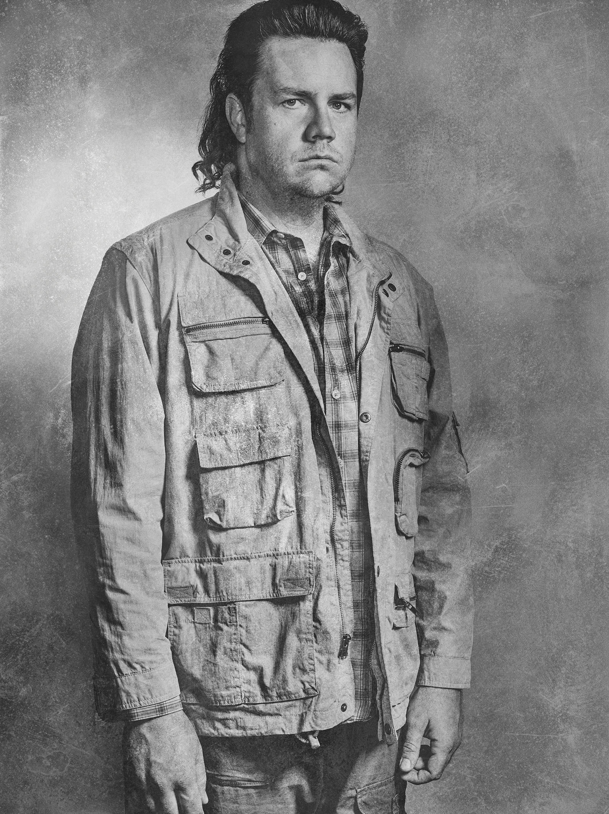

지난 시즌 말에 릭은 뜻밖에도 니건을 살려주었고, 아들의 이름으로 이 결정을 고수했다. 그의 목표는 단순히 살아남는 것이 아니라 칼이 종말론 이후의 세계를
위해 구상한 미래를 건설하는 것이다.
Rick/ Andrew Lincoln
피자 배달원 출신의 한국계 미국인. 위기에 처한 '릭'을 도와 생존자 무리에 합류시킨 장본인이다. 어떠한 어려운 상황속에서도 특유의 쾌활함을 잃지 않는다.
Glenn / Steven Yeun
작품에서 유일하게 검을, 그것도 카타나를 사용하며 대부분의 워커들을 단 1참만에 행동불능으로 만드는 드라마 시리즈의 유일한 소드마스터. 첫 등장시
좀비 2마리의 양팔과 턱을 다 잘라 데리고 다니며 자신의 짐을 들고 다니게 하는 동시에 자신의 흔적을 옅게 하여 워커들과 최소한으로 접촉하는 모습을
보여주었다.
michonne / Danai Gurira
형인 '멀 딕슨'이 좀비들에게 홀로 남겨진 사실을 알고 분노하지만 차츰 생존자들에게 마음을 열기 시작한다. 타고난 관찰력과 생존력으로 동료들에게
없어서는 안 될 중요한 존재가 된다.
Daryl / Norman Reedus
초반에는 나약한 아줌마, 나중에는 무리의 든든한 버팀목
그룹에서 가장 성장을 많이 한 인물 중 하나.
이렇듯 매우 입체적이고 흥미로운 캐릭터라 워킹 데드의 모든 등장인물 가운데 최고 수준의 인기를 누리고 있다.
에드의 아내이자 소피아의 어머니.
Carol/ Melissa McBride
시즌 2에서 첫 등장. 글렌과 행동을 같이하는 일이 많아지면서 점점 가까워지다 결국 사랑에 빠지게 된다.
Meggie/ Lauren Cohan
릭이 병원에서 깨어난 뒤 제일 처음 만난 생존자이다.
Morgan/ Lennue James
극중 등장하는 타이리스 윌리엄스의 여동생.
Sasha/ Sonequa Martin-Green
워커 사태의 원인을 알고 있다고 주장하는 유진 포터를 워싱턴 D.C.로 데려간다는 사명을 가지고 있는 직업 군인으로, 계급은 병장.
Abraham/ Michael Cudlitz
그라임스 부부의 외동 아들.
경찰인 아버지를 무척 존경하며 릭이 총을 구해와서 총도 꽤 잘 쏜다.
Carl/ Chandler Riggs
시즌 4에서 첫 등장한 인물. 시즌이 지날수록 주연급으로 스토리상 위치하게 됐다.
Tara/ Alanna Masterson

자신이 워커 사태의 원인을 알고 있으며 이 때문에 워싱턴 D.C 에 있는 정부 관료를 만나야 한다며 에이브러햄에게 그곳으로 데려가달라고 부탁한다. 총알을 생산하고 자결용 약을 만들어내는 등 머리는 상당히 뛰어나다.
Eugene/ Josh Mcdermitt
T R A I L E R
The Walking Dead - Official Season 10 Trailer
The Walking Dead: Our World Official Trailer
G A L L E R Y
We are the walking dead
We can be better than them. You told me that.
You want to know what I was before all this? I was nobody. Nothing.